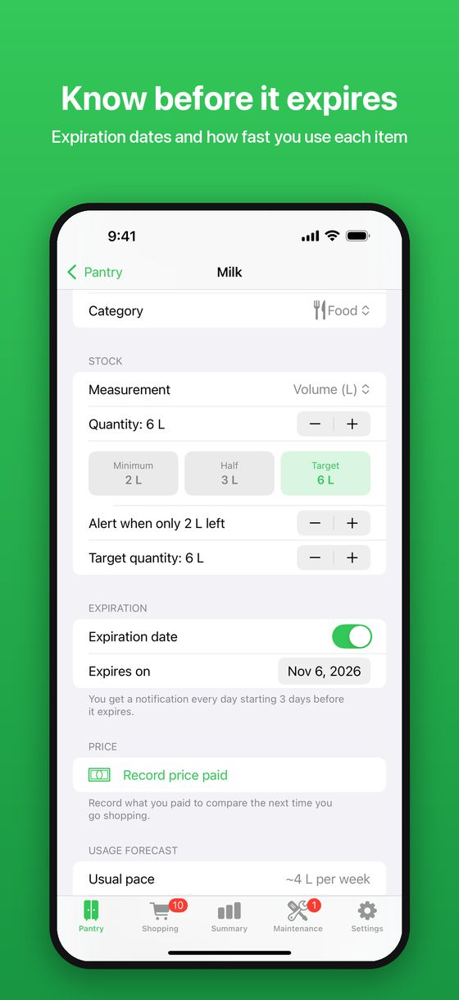
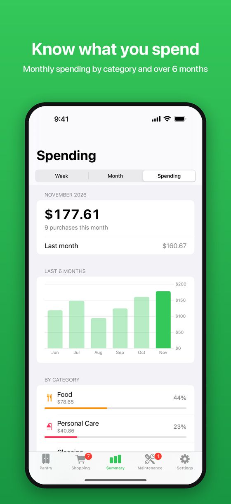
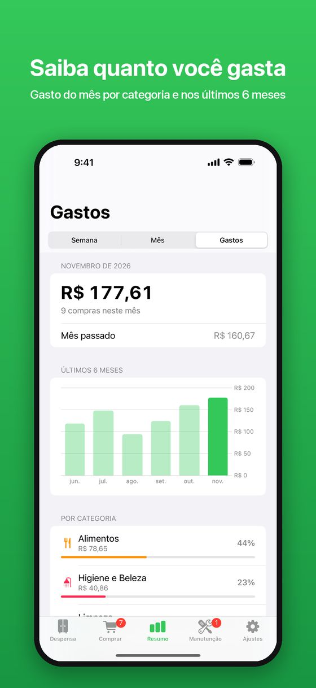
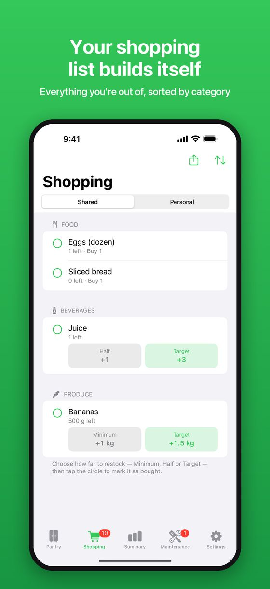
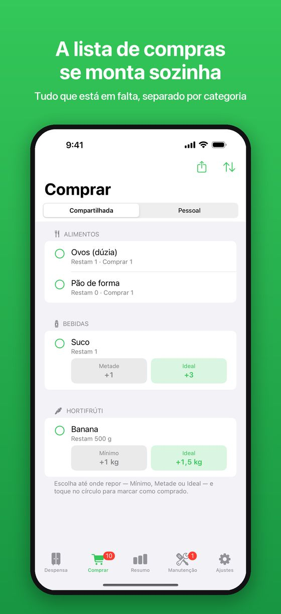
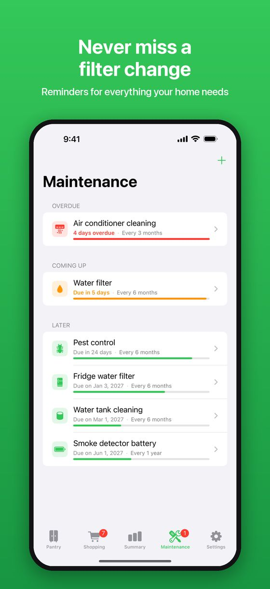
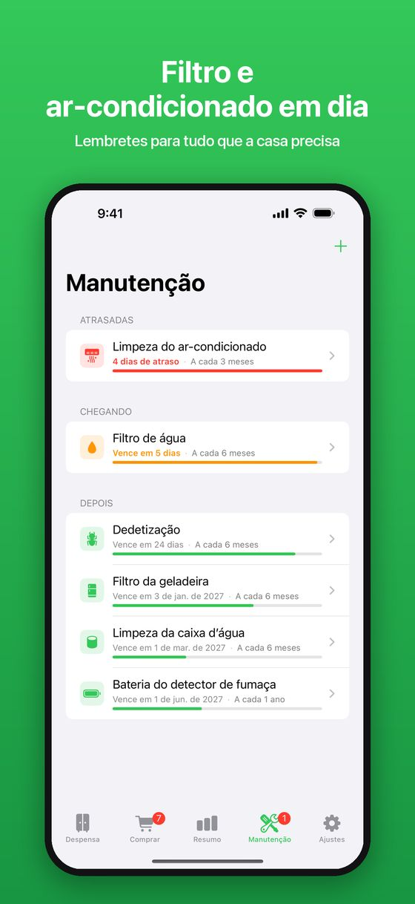
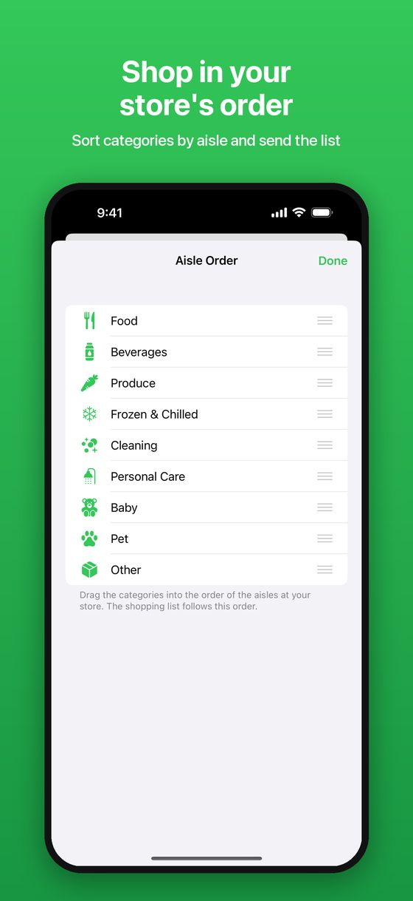
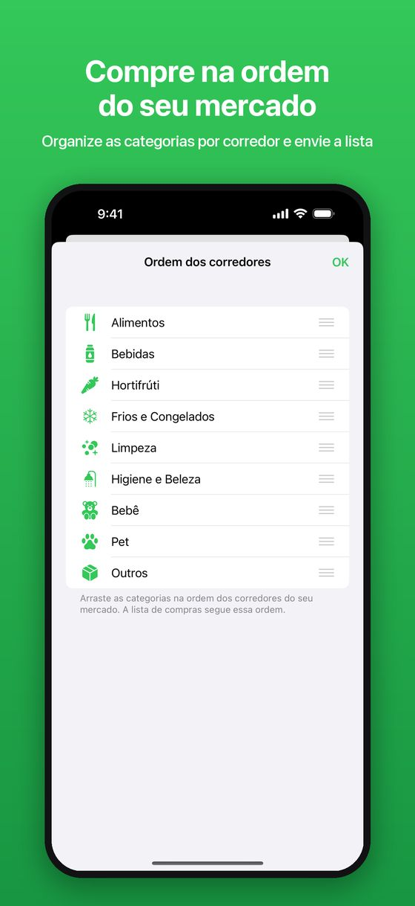

Pantry Stock
Know what's at home. Never run out.Saiba o que tem em casa. Nunca deixe faltar.
Pantry Stock comes with a ready-made catalog of about 75 household supplies, from rice and coffee to detergent and toothpaste. Day to day, you just tap − and +. When something drops below its minimum, it lands on your shopping list. Plus unlocks unlimited items and brands; Pro adds everything else.
O Pantry Stock (Despensa) já vem com um catálogo de cerca de 75 itens da casa, do arroz e café ao detergente e creme dental. No dia a dia, é só tocar em − e +. Quando algo fica abaixo do mínimo, ele vai para a sua lista de compras. O Plus libera itens e marcas sem limite; o Pro traz todo o resto.






Inside the appPor dentro do app






FeaturesRecursos
- Ready-made catalogCatálogo prontoFood, cleaning and personal care items, filtered by your region. Add more from it anytime with +.Alimentos, limpeza e higiene, filtrados pela sua região. Adicione mais quando quiser pelo +.
- Big − and + buttonsBotões − e + grandesUpdate quantities in a tap, by unit, weight or volume.Atualize quantidades com um toque, por unidade, peso ou volume.
- Low-stock alertsAlertas de estoque baixoA heads-up when something runs low, plus a weekly pantry reminder. Items you haven't touched in 30 days are suggested for removal.Aviso quando algo está acabando, e um lembrete semanal da despensa. Itens parados há 30 dias são sugeridos para remoção.
- Automatic shopping listLista de compras automáticaPick Minimum, Half or Target for each item, sort it in your store's aisle order and send it by WhatsApp, Messages or email.Escolha Mínimo, Metade ou Ideal para cada item, ordene pelos corredores do seu mercado e envie por WhatsApp, Mensagens ou e-mail.
- Widget and SiriWidget e SiriSee the shopping list on your Home Screen or Lock Screen, and tell Siri you ran out of coffee.Veja a lista de compras na tela inicial ou na tela bloqueada, e diga à Siri que o café acabou.
- Brands and your own itemsMarcas e itens própriosPlusRecord the exact brand and model, and add as many items as you like.Registre marca e modelo exatos, e cadastre quantos itens quiser.
- Expiry dates and home careValidade e manutenção da casaPlusAn alert on the day something expires, and reminders to change the sheets, towels or sponge.Aviso no dia em que algo vence, e lembretes para trocar lençóis, toalhas ou esponja.
- Prices and monthly spendingPreços e gasto do mêsProRecord what you paid, compare with last time and see the month's spending by category.Registre quanto pagou, compare com a última compra e veja o gasto do mês por categoria.
- Summaries, forecast and sharingResumos, previsão e compartilhamentoProWeekly and monthly consumption, run-out forecasts, and a shopping list shared with your household.Consumo semanal e mensal, previsão de quando vai acabar e lista de compras compartilhada com a casa.